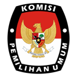

KOMISI PEMILIHAN UMUM
KABUPATEN NGANJUK
CEK SURAT SUARA
Alat bantu cek jenis surat suara bagi pemilih pindah pilih. Silahkan klik
catatan
untuk tata cara penggunaan
DPT Asal
Tempat Asal
Kabupaten/Kota
Kecamatan
DPT Tujuan
Kecamatan
Cek